Look n°25
Cuisine de Noël blanche et dorée
Une cuisine de Noël blanche, marbre et dorée, réveillée par des touches de velours rouge : tabourets à nœuds, guirlande sur les meubles et sapin enneigé. Voici les articles pour recréer ce look chez toi.
Prix au 14/11/2026
-
Tabourets de bar pivotants en velours beige, pied doré (lot de 2)
Coque arrondie à côtes verticales, pied central doré réglable, repose-pieds en anneau. 45 × 51 cm, 92,5 cm de haut, assise à 64,5 cm. 4 tabourets sur l'image : 2 lots.
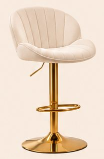
165,99 €Voir sur Amazon -
Plafonnier en cristal et barrettes dorées, Ø 55 cm
Couronne de barrettes dorées et cascade de pampilles de cristal, 9 ampoules E14. Ø 55 cm. Modèle « 2 en 1 » : au plafond ou suspendu, comme sur l'image.
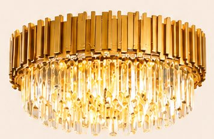
170,99 €Voir sur Amazon -
Sapin de Noël enneigé lumineux 180 cm
Sapin floqué de neige, 200 LED blanc chaud intégrées. 180 cm de haut, Ø 102 cm.
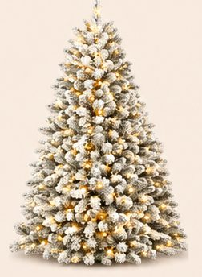
99,99 €Voir sur Amazon -
Cache-pied de sapin en jacinthe d'eau tressée, 71 cm
Collerette évasée couleur naturelle qui cache le pied du sapin. 71 cm en haut, 51 cm en bas, 23 cm de haut.
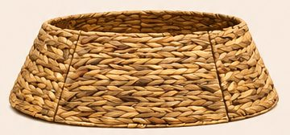
39,99 €Voir sur Amazon -
Tapis en fausse fourrure crème, 60 × 120 cm
Petit tapis doux uni crème, antidérapant et lavable. 60 × 120 cm.
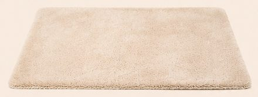
23,66 €Voir sur Amazon -
Casse-noisette blanc et or, 90 cm
Grand soldat en bois blanc, or et argent, chapeau doré et sceptre. 90 cm de haut.
89,99 €Voir sur Amazon -
Grandes boîtes cadeaux lumineuses à nœud argenté (lot de 3)
Cubes en voile blanc pailleté éclairés de l'intérieur, rubans et gros nœuds argentés ; le plus grand fait 30 cm.
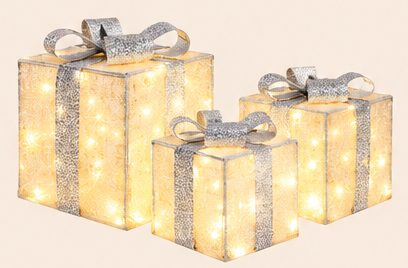
62,99 €Voir sur Amazon -
Lanternes dorées ajourées, 56 et 43 cm (lot de 2)
Lanternes hexagonales en métal doré ajouré, dôme et anneau. 55,9 et 43,2 cm de haut. Une seule est visible sur l'image.
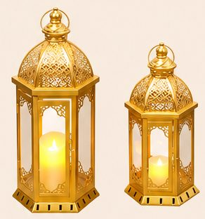
94,99 €Voir sur Amazon -
Guirlande de sapin lumineuse 2,7 m, boules dorées et rouges
Branches de sapin épaisses, boules dorées et rouges, baies, 50 LED à piles. 270 cm. 2 guirlandes bout à bout sur l'image : prix à l'unité.
53,08 €Voir sur Amazon -
Couronne blanche aux pommes de pin enneigées, Ø 31,5 cm
Pommes de pin blanchies, branches de sapin givrées et baies crème. Ø 31,5 cm.
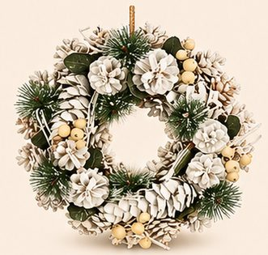
27,99 €Voir sur Amazon -
Ruban LED COB blanc chaud 2700 K, 5 m
Ligne de lumière continue sous les meubles hauts et sous l'îlot, télécommande. 5 m.
19,99 €Voir sur Amazon -
Poinsettias rouges artificiels (4 bouquets)
Étoiles de Noël rouge vif à cœur doré, feuilles vertes. 34 cm.
13,99 €Voir sur Amazon -
Vase cylindrique en verre transparent, 20 cm
Cylindre de verre clair à fond épais. 20 cm de haut, Ø 10 cm.
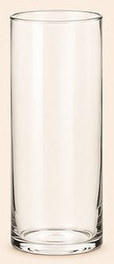
16,98 €Voir sur Amazon -
Plateau rond miroir doré, Ø 32 cm
Fond miroir, galerie ajourée en métal doré, petits pieds. Ø 32 cm.
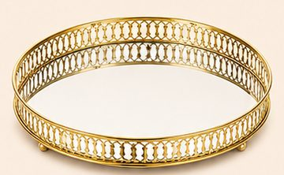
42,98 €Voir sur Amazon -
Mini sapins dorés en sisal (48 pièces)
Petits sapins dorés pailletés sur socle en bois, plusieurs hauteurs (jusqu'à 20 cm).
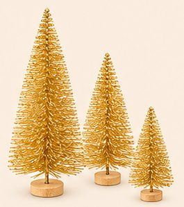
16,98 €Voir sur Amazon -
Maisons de Noël en bois blanc lumineuses (lot de 3)
Maisonnettes blanches enneigées, fenêtres éclairées, à piles. 12 × 7,5 × 7 cm. 2 visibles sur l'image.
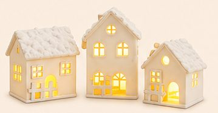
16,99 €Voir sur Amazon -
Bougies LED en vraie cire, motif rennes (lot de 3)
Bougies piliers ivoire, forêt et rennes dorés pailletés, flamme LED. 10, 12,5 et 15 cm de haut. 2 visibles sur l'image.
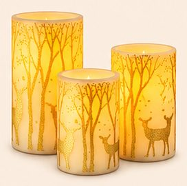
18,99 €Voir sur Amazon -
Nœuds en velours rouge vin (lot de 18)
Nœuds à longues queues en velours bordeaux, sur les tabourets, la couronne et le sapin. 13 × 26 cm.
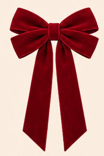
19,99 €Voir sur Amazon -
Boules de Noël en velours rouge (35 pièces)
Boules rondes, ciselées et en goutte, velours bordeaux, sous les nœuds des tabourets et dans le sapin. 4 à 8 cm.
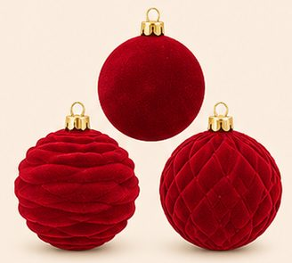
19,71 €Voir sur Amazon -
Chemin de table de Noël en lin rouge, 33 × 230 cm
Lin rouge imprimé de branches de sapin, baies et sucres d'orge. 33 × 230 cm.
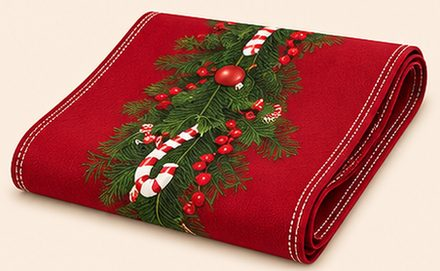
11,99 €Voir sur Amazon
Enregistrer ce look sur Pinterest
Comment naît un lookComment chaque article est choisi, mesuré et vérifiéImage d'inspiration générée par IA. Prix indicatifs, revérifiés toutes les deux semaines.